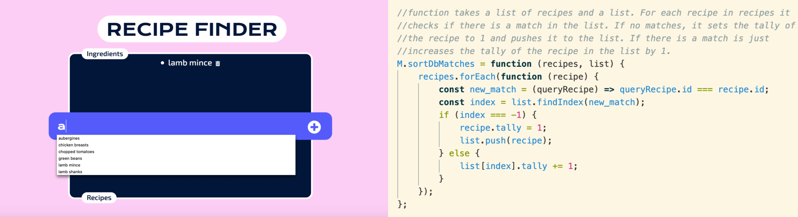
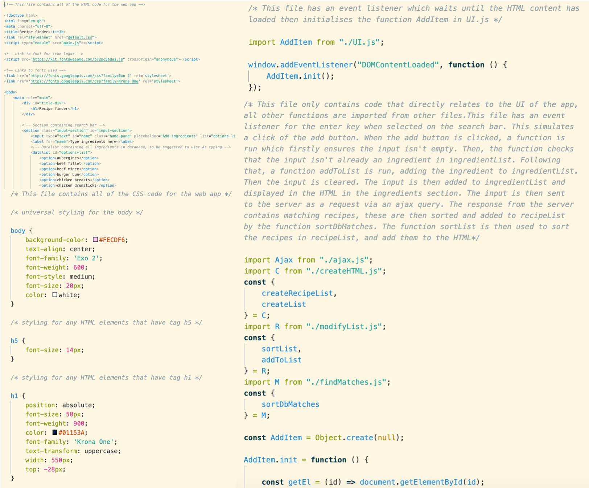
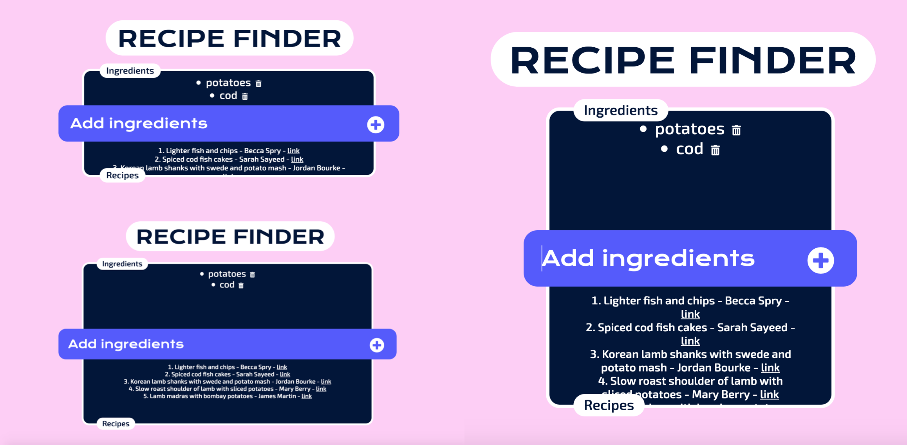
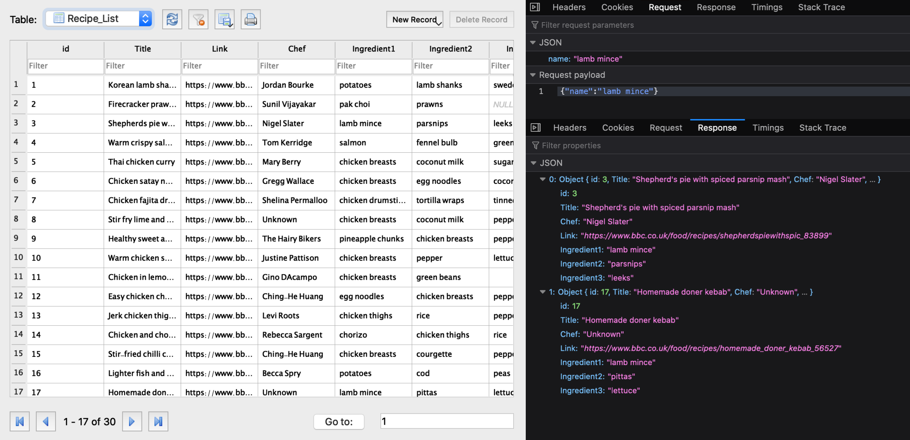
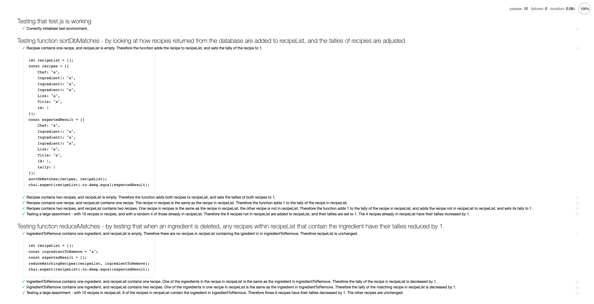

I set out to create a recipe finding app that takes ingredients from the user and finds recipes
from a database that contain the input at least once.
Concept
The app that I have created allows users to input anything, however, as the user starts typing, the
ingredients in my data list are suggested. Assuming that the input isn't empty, and the ingredient hasn't
already been added, when the user presses the add button or the enter key the input will be added to the
ingredient list.
If the input has no corresponding recipes in the database, no recipes will be added. Otherwise, all recipes
with at least one of their ingredients matching the input are added to the recipe list.
Each recipe has a property called tally, which corresponds to the number of user inputs matching ingredients
in the recipe. For each new ingredient added, each recipe's tally is updated and the recipes are sorted by
highest tally.
When an ingredient is added, it has a trash button next to it. When clicked, the ingredient is removed and
the corresponding recipes have their tallies decreased by 1.

Coding Style
I have written all of the code for the app myself, using HTML and CSS for the front end, and JavaScript and
SQL for the backend. I have
written all my code in a functional style such that it passes JS lint with no error. I have ensured
that I use functions where possible so no code is duplicated. Furthermore, I have tried to make my functions
independent from other code as far as I could. I have multiple javascript files containing different
functions that interact with one another. This is done to make the code clearer to read, and so that no file
is unnecessarily long.
My main.js file which waits until the HTML content has loaded then initialises UI.js. UI.js has an event
listener for the enter key when the input box is selected, this simulates a click of the add button. UI.js
then has a function for when the add button is clicked. All functions that do not have to be in UI.js are
appropriately placed in other files. findMatches.js has two function - sortDbMatches and
reduceMatchingRecipes, which both filter through arrays to find matches. createHTML.js contains two
functions which take inputs and output the corresponding HTML code to be appended to index.html.
modifyList.html contains one function that sorts a list, one that adds, and one that removes ingredients
from a list.

User Experience & User Interface
I have designed a minimalist interface so that it is very obvious for the user of how to use the web app,
with an aesthetically pleasing colour scheme and rounded corners on boxes. I have chosen a fun font for my
headings, and a clear to read font for my body. I have made the layout of the page very simple with the big
search bar across the centre so the user is not confused about how to use the app. I have a placeholder in
the search bar to explain that the user should type ingredients, and headings above the ingredient and
recipe list so there is no confusion. I have suggestions appear as the user is typing to aid the user
experience. I have used icons for delete and add to look nice and simple. When either the add button or
delete buttons are hovered over their colours change to indicate that they can be clicked. The elements of
the page have been styled in the CSS to be proportionate so that the content scales well to most screen
sizes. I have connected the app to a server so multiple instances can be run concurrently by multiple users.

Data
I have a database containing 30 recipes - each with a unique ID, a title, chef, link, and the three key
ingredients. Each time the user clicks the add button or the enter key, I search the database for any
recipes which have a matching ingredient to the input. The database returns each recipe as an object with
keys and values.
I then have a function sortDbMatches which checks if each recipe returned by the database is already in the
recipe list. If it isn't, then it sets the tally equal to 1 and adds it to the list. If it is already in the
list then it just increases the tally by 1. Once completed for all recipes returned, it sorts the list by
highest tally, clears the list in the HTML, and adds each recipe back to the HTML.
When an ingredient is deleted, I use a function called reduceMatchingRecipes that filters through the recipe
list, and for any recipes which have a matching ingredient to the ingredient being deleted, it decreases the
tally by 1. The recipe list is then re-sorted, the HTML cleared and each recipe with tally greater than 0
added to the HTML.

Debugging
I used unit testing for two functions, the sortDbMatches function and the reduceMatches function. For each
function, I had numerous tests with incrementing complexity. This was done to ensure that every edge case
was tested, and so that I could clearly see where the functions were not working.
sortDbMatches takes an array of recipes and a recipe list. So I worked up from simply adding one recipe to
an empty recipe list to adding 10 recipes, 4 of which were already in the recipe list. This way of unit
testing helped me when creating the function as ensuring the tallies of existing ingredients would increment
correctly was very difficult - and also the function wouldn't filter through all the recipes, so it was
helpful having tests with increasing numbers of recipes to determine where the function was failing.
reduceMatches takes an ingredient to remove and a recipe list. As with the previous function, I started with
simple tests, working up to more complex tests. It was very useful having separate tests where for the
ingredient there were no matches, some matches or all matched recipes in the recipe list, as I could
pinpoint what was wrong with my code.

Best Practice
All of my code passes JS lint with no errors and is written in a very functional style. My code also passes
the firefox accessibility and AXE requirements. My code is clearly commented in each file with a description
at the top of each file describing what the file does. I have commented on a functional level, and where
steps are unclear. I have separated my HTML, CSS and javascript code into different files, with the
javascript functions grouped into different files based on their purpose.